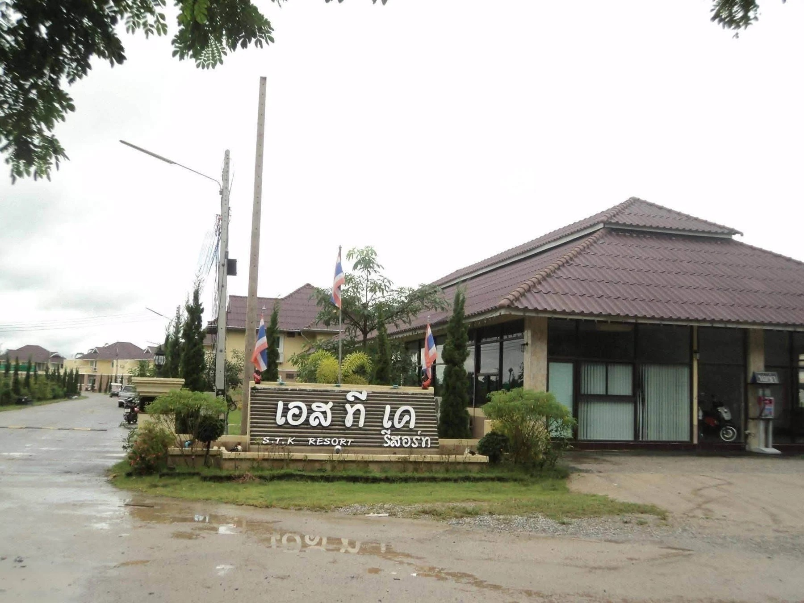
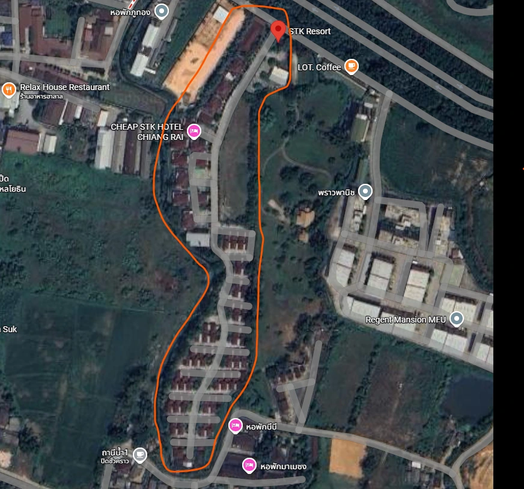
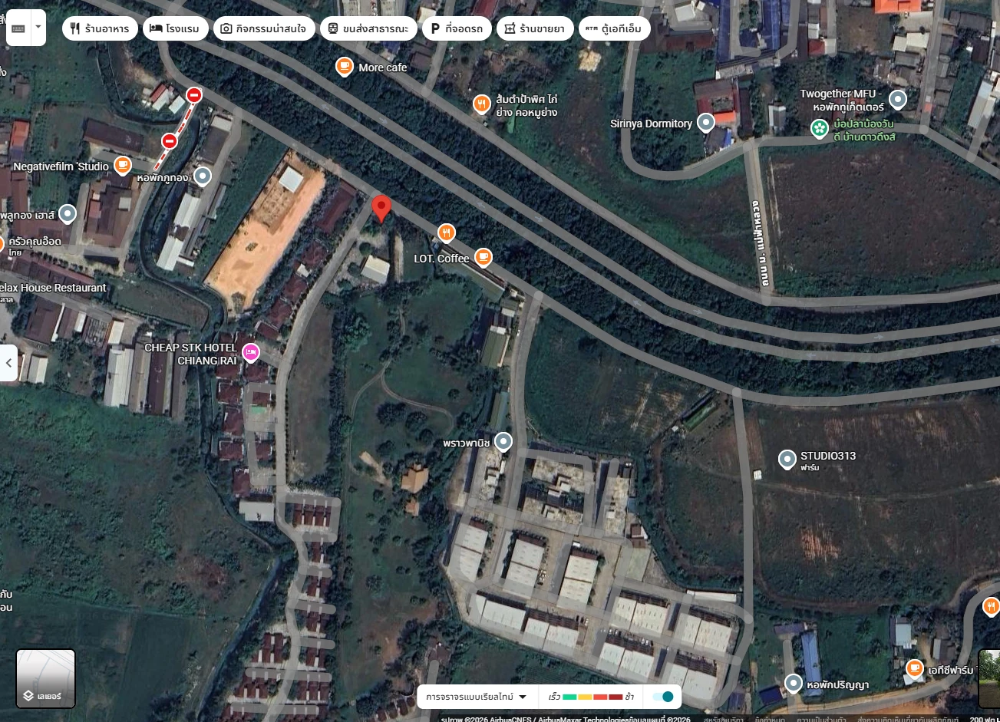

01
อาคารพักอาศัย
อาคารหลายห้องในบริเวณเดียวกัน รองรับการพักระยะยาว
ขายทั้งโครงการ · เชียงราย
ใกล้มหาวิทยาลัยและศูนย์การแพทย์แม่ฟ้าหลวง
รับช่วงกิจการที่พักรายเดือน พร้อมบ้านพักแยกหลังและอาคารพักรวม 215 หน่วยตามข้อมูลประกาศ

บ้านพักแยกหลัง แต่ละหลังมี 1 ห้องนอนและ 1 ห้องน้ำ นับเป็น 84 หน่วยพัก
แต่ละหลังแบ่งเป็นชั้นล่าง 4 ห้องและชั้นบน 4 ห้อง รวม 8 ห้องต่อหลัง
ที่พักในอาคารสูง 3 ชั้น ภาพประกาศระบุรวม 27 ห้อง
รวม 215 หน่วยพักตามภาพประกาศ โดยนับบ้านพักส่วนตัวหนึ่งหลังเป็นหนึ่งหน่วย

เนื้อที่รวมตามข้อมูลประกาศ เส้นสีส้มแสดงบริเวณโครงการโดยประมาณ ควรอ้างอิงเอกสารที่ดินเมื่อตรวจสอบแนวเขต

พื้นที่เปิดโล่งประมาณ 3 ไร่ 3 งาน เส้นวงแสดงบริเวณที่ใช้ประเมินเบื้องต้นจากภาพดาวเทียม
ดูตำแหน่งบน Google Maps ↗01 / รู้จักสถานที่
จากทางเข้าโครงการ ถนนภายในพาผ่านแนวต้นไม้ บ้านพักแยกหลัง และอาคารพัก บรรยากาศคล้ายหมู่บ้านใกล้มหาวิทยาลัยแม่ฟ้าหลวง
STK เปิดให้บริการที่พักรายเดือน มีทั้งนักศึกษาและคนทำงานพักอาศัย พร้อมระบบน้ำ ไฟฟ้า และอินเทอร์เน็ตสำหรับผู้พัก
ทำเลใกล้โรงพยาบาลศูนย์การแพทย์ มฟล. เปิดโอกาสให้ผู้รับช่วงศึกษาตลาดเช่ารายเดือนสำหรับพยาบาล บุคลากรทางการแพทย์ และผู้มาฝึกปฏิบัติงาน โดยเลือกปรับปรุงบ้านพักหรือห้องพักให้เหมาะกับการอยู่ระยะยาว
02 / บ้าน อาคาร และบรรยากาศ
ภาพจากสถานที่จริง
ทั้งภายนอกและตัวอย่างห้องพัก
อาคารหลายห้องในบริเวณเดียวกัน รองรับการพักระยะยาว
อีกบรรยากาศของการพักอาศัย ภายในโครงการ
ตัวอย่างห้องและเฟอร์นิเจอร์ไม้ รูปแบบแตกต่างกันตามห้อง
ภาพบ้านพักส่วนตัวขยายด้วย AI จากภาพประกาศเดิม รายละเอียดบางส่วนอาจคลาดเคลื่อน ภาพอาคารพัก 3 ชั้นปรับแต่งเพื่อลบรถ ภาพที่ได้รับอาจถ่ายต่างช่วงเวลา สภาพและอุปกรณ์แต่ละห้องอาจแตกต่างกัน โปรดนัดชมสถานที่ปัจจุบัน
03 / อีกมุมมองของพื้นที่
หนึ่งนาทีเพื่อรู้จักพื้นที่
จากระดับสายตาสู่มุมสูง
ภาพมุมสูงและเส้นแสดงพื้นที่ในคลิปใช้ประกอบการนำเสนอ ไม่ใช่เอกสารรับรองแนวเขตที่ดิน
ทำเลโครงการ · อ.เมืองเชียงราย
โรงพยาบาลศูนย์การแพทย์เปิดให้บริการอยู่แล้ว และ มฟล. มีแผนขยายบริการเฉพาะทางและจัดตั้งศูนย์แพทยศาสตรศึกษาชั้นคลินิกในช่วง พ.ศ. 2569–2573
ดูแผนจากโรงพยาบาลศูนย์การแพทย์ มฟล. ↗พิกัด 20.0444541, 99.8797407 · กรุณานัดหมายก่อนเข้าชม
05 / โอกาสสำหรับเจ้าของคนต่อไป
การขายครอบคลุมที่ดิน บ้านพัก อาคารพัก และกิจการที่พักรายเดือน ผู้ซื้อสามารถรับช่วงการดำเนินงานและวางแผนปรับปรุงที่พักทีละส่วนตามความต้องการของผู้เช่า
STK มีพื้นที่เปิดโล่งให้ผู้รับช่วงสำรวจและวางแผนต่อยอด เช่น อาคารพักรายเดือนสำหรับพยาบาลและบุคลากรที่ทำงานในย่านศูนย์การแพทย์ มฟล. ควบคู่กับการรักษาแนวต้นไม้และบรรยากาศแบบหมู่บ้าน
ขนาดพื้นที่ที่ใช้ได้และรูปแบบอาคารขึ้นอยู่กับแนวเขตตามเอกสาร สภาพพื้นที่ และข้อกำหนดการก่อสร้าง
ขอข้อมูลทรัพย์เพิ่มเติมจาก Bright ↗ข้อมูลเนื้อที่และจำนวนหน่วยพักอ้างอิงภาพประกาศที่ได้รับ รายละเอียดกรรมสิทธิ์ รายการทรัพย์สิน รายรับ ค่าใช้จ่าย สัญญาเช่า และเงื่อนไขซื้อขาย โปรดขอเอกสารและตรวจสอบกับผู้เสนอขายก่อนตัดสินใจ
มารู้จักสถานที่ด้วยตัวเอง
สอบถามข้อมูลการเสนอขาย ขอรายละเอียดเพิ่มเติม
และนัดหมายเข้าชมสถานที่ล่วงหน้า
Bright · ผู้ประสานงานการเสนอขายและนัดชมโครงการ
britandj7@gmail.com ↗